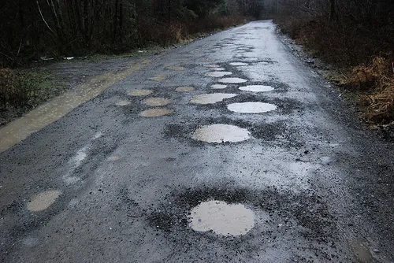
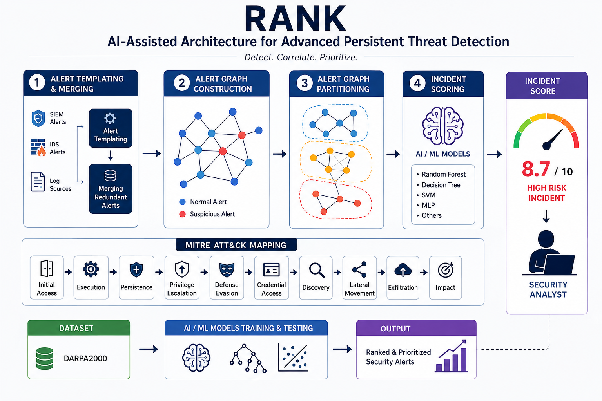

Frontend
HTML, CSS, JavaScript, responsive interfaces, and usability-focused development, demonstrated by this portfolio.
Hello, I’m Yuvaraj
I’m a curious developer who enjoys turning thoughtful design and solid code into products people can actually use.
What I bring
HTML, CSS, JavaScript, responsive interfaces, and usability-focused development, demonstrated by this portfolio.
Breaking big ideas into simple, testable steps that keep projects moving.
Exploring new tools, patterns, and perspectives to make better work.
Writing clean scripts and building practical solutions with Python, demonstrated by the RANK project.
Organizing, querying, and understanding data with relational databases.
Selected work

Developed an automated road damage detection system using YOLO-based deep learning models to identify longitudinal cracks, transverse cracks, alligator cracks, and potholes from UAV images. The application provides a Tkinter-based interface for uploading test images and performing image-based inference, with support for comparing YOLOv5, YOLOv7, and YOLOv8 models using evaluation metrics such as precision, recall, and F1-score. The current implementation focuses on image-based inference rather than continuous real-time webcam or video-stream detection.
Developed an LBP-based CNN (LBPNET) model to classify face images as fake or non-fake. The system extracts Local Binary Pattern (LBP) texture features from input face images and uses a CNN classifier to identify whether the image belongs to the fake-face or non-fake-face class. The model is designed specifically for the dataset used in this project and should not be interpreted as a general-purpose deepfake detector.

AI-Assisted APT Detection (RANK) — Developed an AI-assisted cybersecurity system for detecting and prioritizing Advanced Persistent Threats (APTs) by correlating security alerts, analyzing incident relationships, and mapping threat activity to the MITRE ATT&CK framework. The system processes security events to identify suspicious patterns, generate incident insights, and prioritize threats using model-driven scoring and alert analysis. RANK provides a practical workflow for transforming raw security alerts into structured threat intelligence and actionable incident information.
Start a conversation
Tell me a little about what you’re building. Your note is saved locally in this browser only. It is not sent to me. To contact me directly, use the email address below.
kudupudiyuvaraj.4@gmail.com